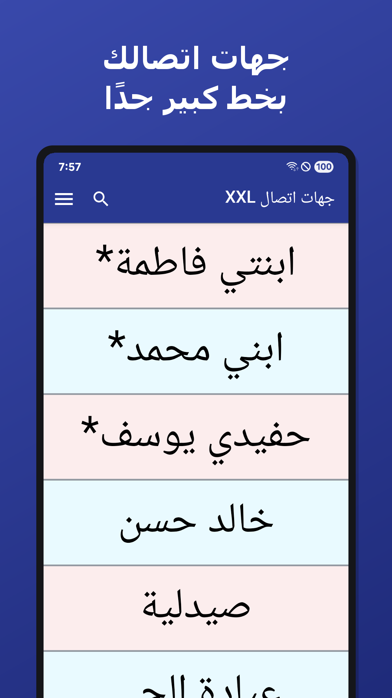
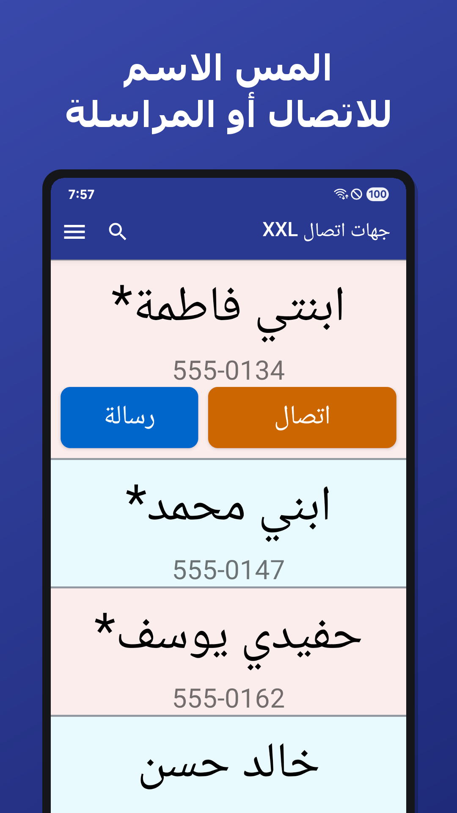
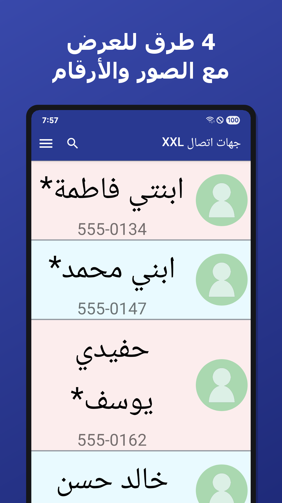
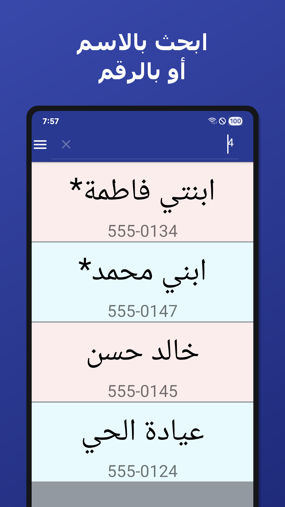
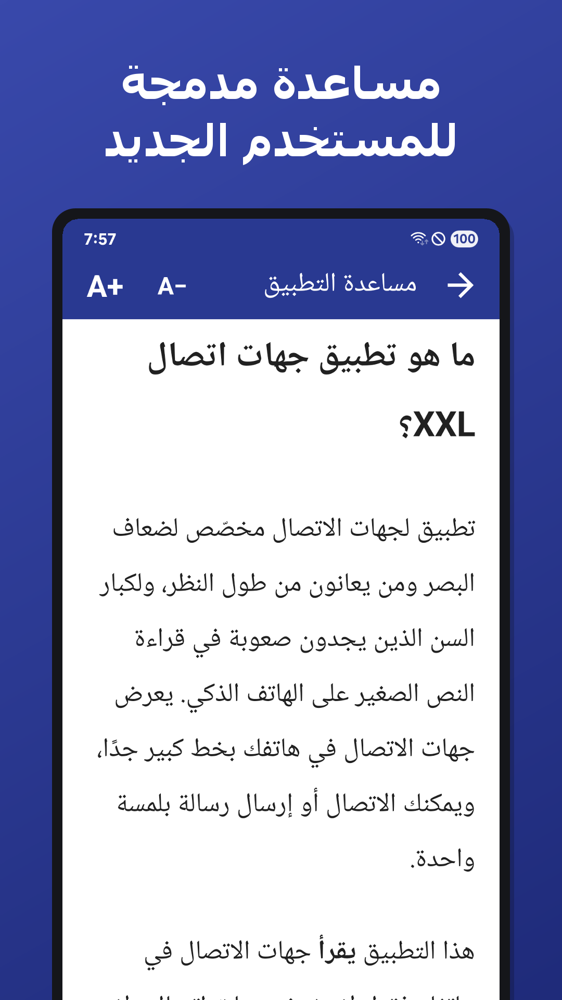

هل يصعب عليك الاتصال بسبب الخط الصغير على هاتفك؟
جهات اتصال XXL تطبيق لجهات الاتصال مخصّص لضعاف البصر ومن يعانون من طول النظر ولكبار السن. يعرض جهات الاتصال في هاتفك بخط كبير جدًا، ويمكنك الاتصال أو إرسال رسالة بلمسة واحدة.
خط كبير جدًا
- تملأ أسماء جهات الاتصال الشاشة بخط كبير وسهل القراءة.
- 8 أحجام للخط. غيّرها درجة درجة من "تكبير الخط" و"تصغير الخط" في القائمة (☰).
- يستخدم الحجم الذي تختاره في هذا التطبيق، بغض النظر عن إعداد حجم الخط في الهاتف.
- يبقى حجم الخط والعرض الذي اخترته في المرة القادمة التي تفتح فيها التطبيق.
المس للاتصال أو إرسال رسالة
- المس اسمًا لتظهر زرّا "اتصال" و"رسالة" بحجم كبير.
- يفتح زر "اتصال" تطبيق الهاتف والرقم مكتوب مسبقًا. لا تبدأ المكالمة إلا بعد لمس زر الاتصال مرة أخرى، وهذا يقلّل المكالمات الخاطئة.
4 طرق للعرض
- الاسم فقط / الاسم + الرقم / الصورة + الاسم / الصورة + الاسم + الرقم
- تظهر صور جهات الاتصال داخل دائرة.
بحث سهل
- تظهر جهات الاتصال المميّزة بنجمة من العائلة والأصدقاء أولًا، ثم الباقي حسب الاسم.
- المس العدسة المكبّرة للبحث بجزء من الاسم أو الرقم.
سهل من البداية
- عند السماح بالوصول في أول تشغيل، تُستورد جهات الاتصال فورًا.
- "مساعدة التطبيق" في القائمة تشرح كل شيء بخط كبير، ويمكنك تكبير نص المساعدة أيضًا بزرّي A− / A+.
10 لغات
- العربية والإنجليزية والكورية والصينية (المبسّطة) واليابانية والإسبانية والألمانية والفرنسية والروسية والهندية.
- يتبع التطبيق لغة هاتفك، ويمكنك اختيار لغة أخرى لهذا التطبيق وحده من القائمة: "اللغة (Language)".
استخدام آمن
- يقرأ جهات الاتصال في هاتفك فقط، ولا يضيفها أو يغيّرها أو يحذفها أبدًا.
- ليس له إذن الوصول إلى الإنترنت، لذلك لا يرسل جهات اتصالك إلى أي مكان.
- بلا إعلانات.
- إذن واحد فقط: جهات الاتصال.
من المفيد أن تعرف
- بعد إضافة جهات اتصال أو تغييرها في هاتفك، المس "استيراد جهات الاتصال" في القائمة.
ثبّته على هاتف والديك ليتصلا بالعائلة بسهولة وبخط كبير.
حمّله من Google Play (مجانًا)